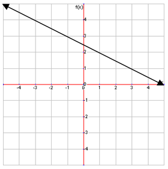
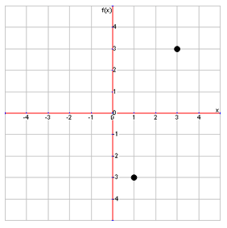
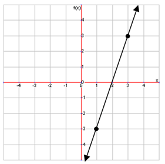
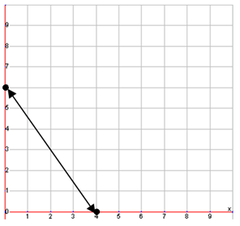
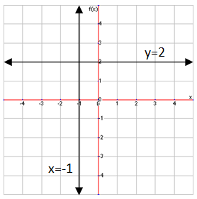

Picking Points
With these types of equations, there are an infinite number of solutions because there are two variables but only one equation. You could plug in any value for x and make the equation true by plugging in a certain value for y. For example, substituting 2 for x would mean that you would have to substitute 1 for y to make the equation true. Plugging in 4 for x would mean y would be 0. Plugging in 8 for x would mean y would be -2. These are just a few possible solutions to this equation. To graph this, use the x-value of the solution as the x-coordinate value, and use the y-value of the solution as the y-coordinate value.
Any point on this line is a solution for the equation \(2x+4y=8\). But while this line shows all of the solutions, you only need to find two solutions in order the draw the line. To graph by plotting points, you first need to find 2 points that make the equation true and plot them on a graph. For example, for the equation \(3x-y=6\), we could pick the points \((3,3)\) and \((1,-3)\) as our points, or any other points that make the equation true. Then we plot the points:

Now we just connect the two points with a line to graph this equation:

The Intercept Method
There is also a special method of graphing lines by plotting points called the intercept method. Using this method, we find the x- and y-intercepts of the equation, or where the line meets the x-axis and y-axis. We can do this very easily by seeing that the point where the line meets the x-axis, the y-coordinate is 0, and when the line meets the y-axis, the x-coordinate is 0. This means that when we try to find our points to plot with, the x-intercept point will have 0 as its y-value, and the y-intercept point will have 0 as its x-value. For example, try finding the intercepts of the following equation:
\[3x+2y=12\]
First we will try to find the x-intercept. We already know that the y-value of it is 0, so we can plug 0 into the equation to replace y. That’s changes the equation to this:
\[3x=12\]
We can easily solve this to find that \(x=4\). Then, we use 4 as the x-coordinate for the x-intercept, so our ordered pair would be \((4,0)\). Now to solve the second ordered pair. Instead of plugging in 0 for y, now we plug in 0 for x, and solve like we did before. This gives us \(y=6\), so our y-intercept point is \((0,6)\). Now we can plot these points on a graph and draw the line:

Now that we know how to graph by plotting points, we can use this knowledge to check if a particular point is a solution for an equation. To do this, we just need to plug in the x- and y- values of that point into the equation and check if the equation is true. For example, is the point \((2,0)\) a solution for the equation:
\[3x-y=6\]
First, plug in 2 for x and 0 for y, then solve. As it turns out plugging in these numbers makes the equation true, so the point \((2,3)\) is a solution for this equation. If the equation were not true, then the point would not be a solution.
Horizontal and Vertical Lines
There are two special cases of lines that do not have 2 variables, but can still be graphed: horizontal and vertical lines. A horizontal line can be represented by an equation like this:
Let’s look at why these two equations produce horizontal and vertical lines. In the equation \(y=2\), the y-value is a constant, 2, because the equation so. But, the equation says nothing about the x-value, so it can be anything. Graphing this means that the line can cross any x-value, but can only have one y-value, 2, so the line is horizontal where y=2. The opposite is true for the equation x=-1. The x-value is constant at -1, while the y-value can be anything, which results in a vertical line.